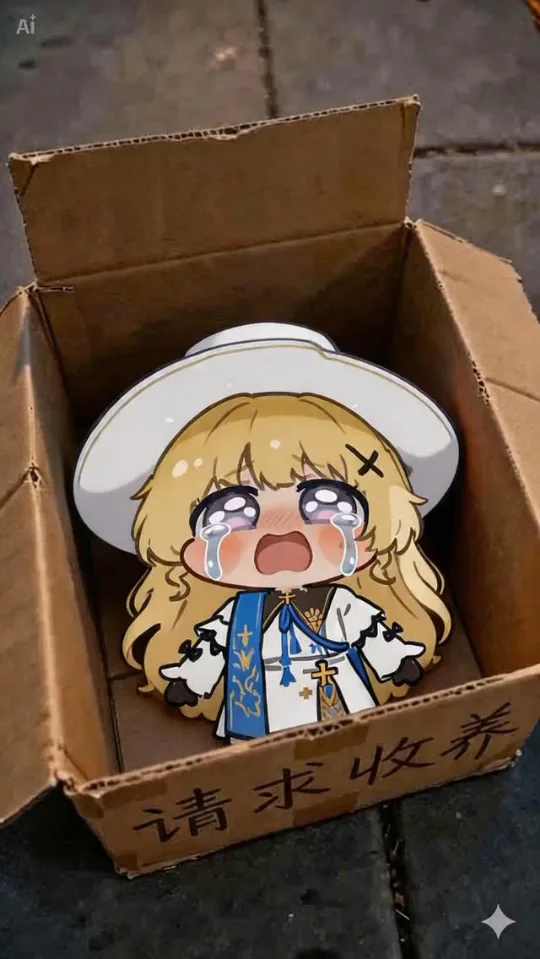
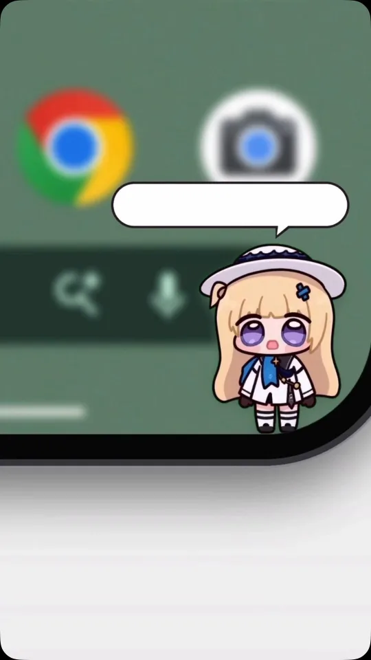

How I make AI character videos, and what one test taught me
I make short character videos with AI for Frisson Labs. Every clip teaches me something, so I write the lesson down and use it in the next one. This page walks through that loop, a small test that worked, and where I want to take it next.
On this page: How I make them · A call-to-action test · What’s next
How I make them

Consistency. Lighting. Story.
Document the lesson. Reuse it next time.
My creative review · examples, not a controlled comparison.The tool
So I built a small video interface for myself: pick a model, write the prompt, attach reference media, and set duration, resolution and aspect ratio in one place.

The guide
Next to the tool I keep a Markdown guide, seedance-guide-chibi.md, with four sections: character rules, visual constraints, previous learnings and prompt formats.
One lesson from it: a clip where I packed in too much choreography ended up with barely any motion. The rule I wrote afterwards:
“Three beats per clip, four sub-times total. More story means another clip.”
The loop is simple. Set the character and visual rules, generate with reference media, review the take, and write down anything worth keeping. The guide is documentation I keep beside the tool; the tool doesn’t load it automatically.
A call-to-action test

Views are nice, but I wanted viewers to do something next. So I used Claude to make a call to action for the end of a video, pointing people to the link in my bio.
187 profile visits · 18 follows
979 profile visits · 1.9K follows
The CTA example recorded more link clicks. That gave me a reason to test beyond views.
Instagram insights, screenshots below · different videos, not an A/B test. A click isn’t a signup.


What’s next
Concept only · no live integrations
A small character. A little moment of kindness.
Meet the companions at Oto ↗Other things I’ve built
I also built Oto’s character creation workflow, and I’m experimenting with small games where players make choices.
Oto · Oto for iOS · Word Guess · Bridge Walk
I’ve estimated the workflow takes character creation from days to about an hour. I still need to time a comparable finished stage before calling that a measurement.